Complementary vision · Generative reconstruction
CoGenRec: A Unified Generative Framework for Complementary Vision Reconstruction
Tsinghua UniversityPrimevision
Reconstructing sharp, high-frame-rate HDR video
from complementary RGB and spatio-temporal measurements.
Overview


The complementary vision sensor captures spatially dense RGB frames alongside high-speed spatial and temporal difference signals. CoGenRec combines these measurements with a video generative prior to jointly address motion blur, temporal undersampling, and exposure clipping.
01
Restore sharp structures
Use intra-exposure cues to recover motion-blurred RGB frames.
02
Recover motion between frames
Use inter-exposure measurements for high-frame-rate reconstruction.
03
Fuse complementary exposure information
Combine the two sensing pathways for HDR reconstruction.
Real-world results.
Ground fireworks
Balloon burst
Train encounter (600 km/h relative speed)
Peach blossoms
Street bicycles
Method comparisons
Spinning disc
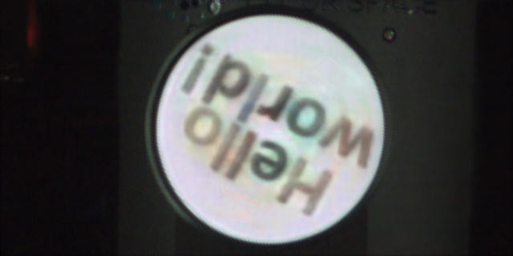
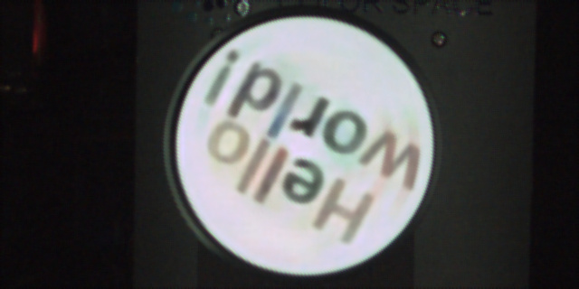
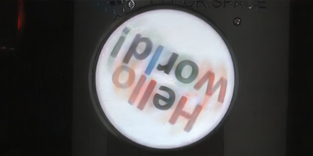
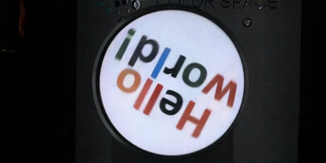
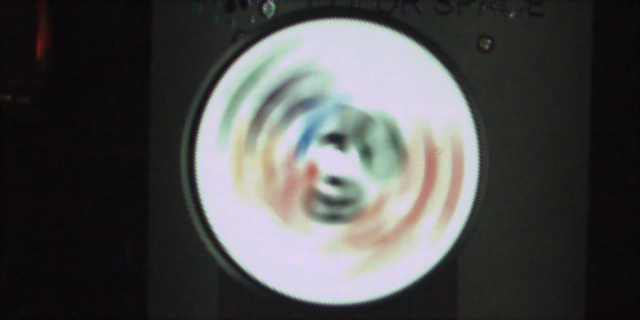
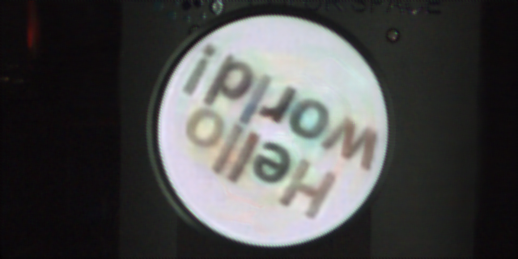
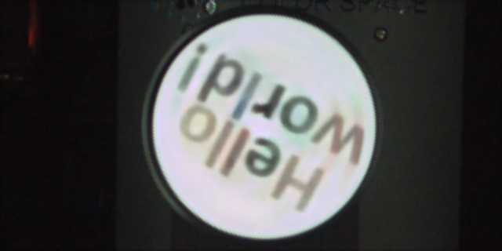
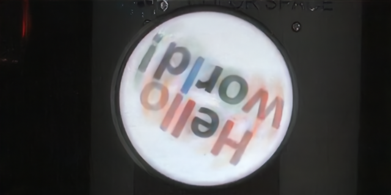
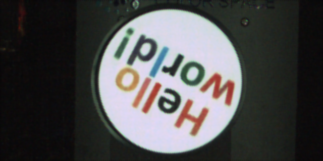
Rotating blocks
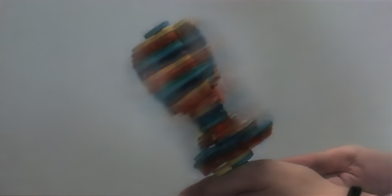
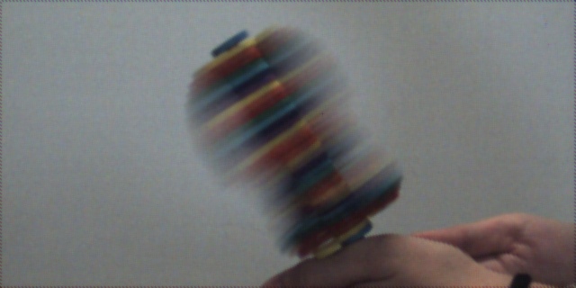
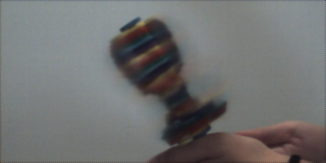
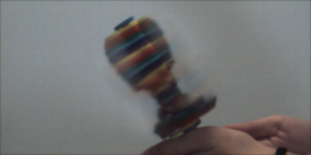
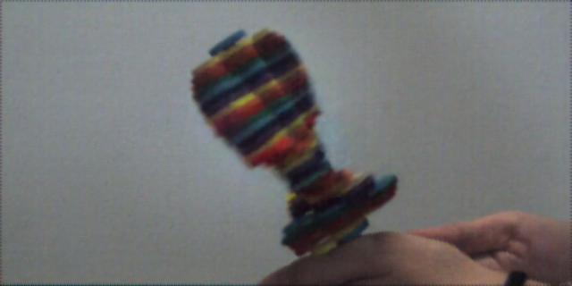
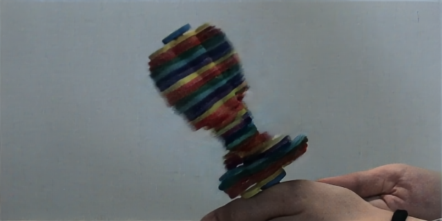
Cartoon poster
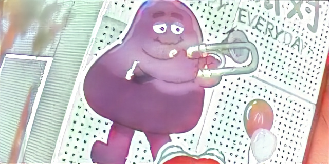
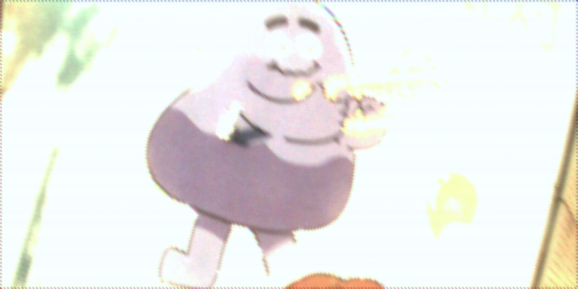
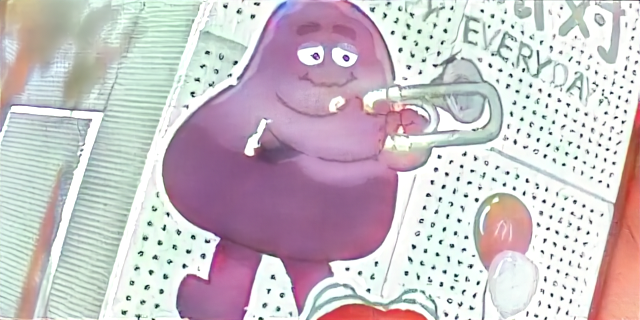
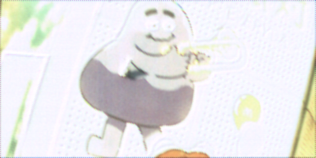
Sunlit facade
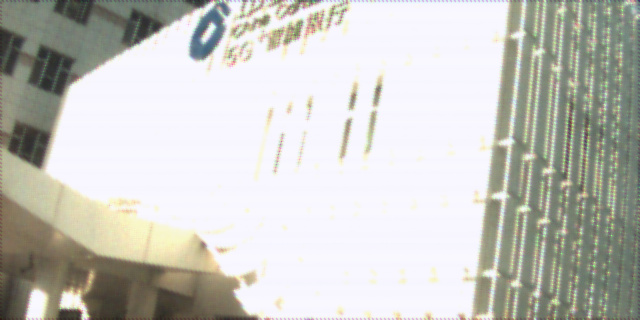
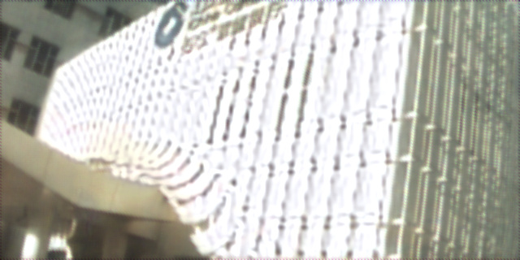
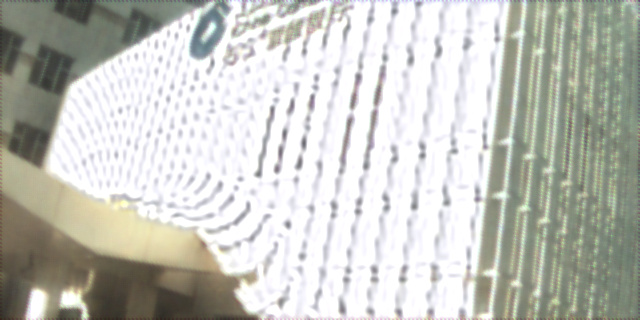
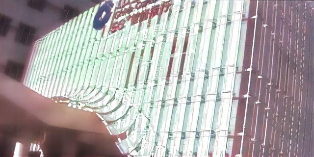
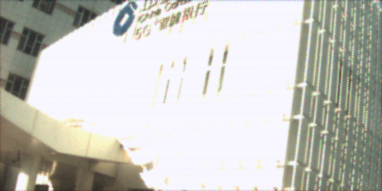
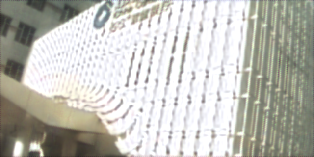
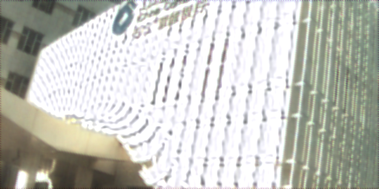
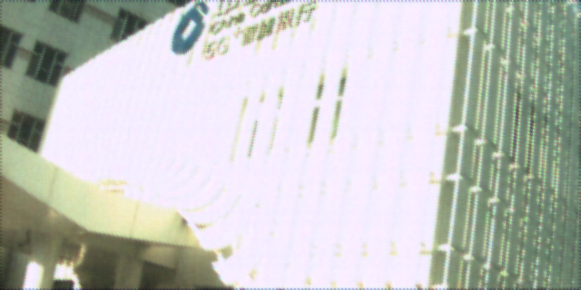
Passing motorcycle
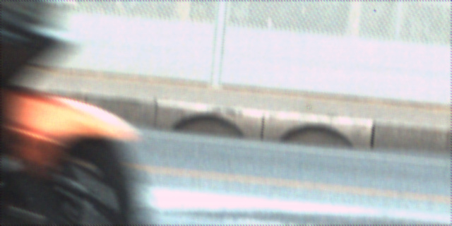
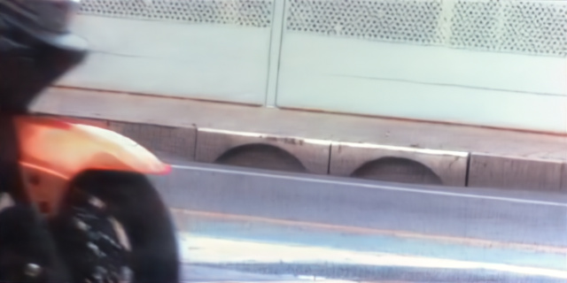
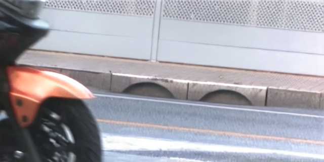
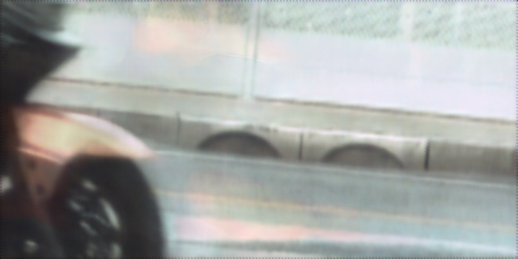
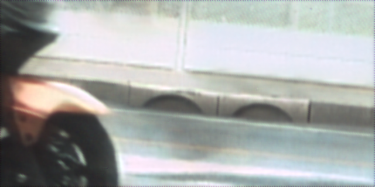
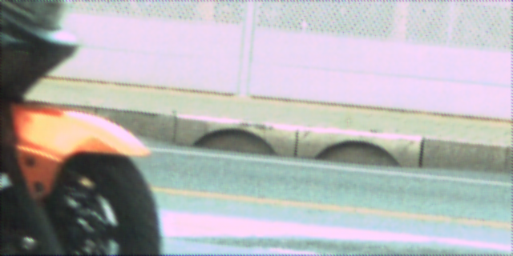
Resources
Paper
Code & models
Citation
BibTeX will be added with the final public paper information.